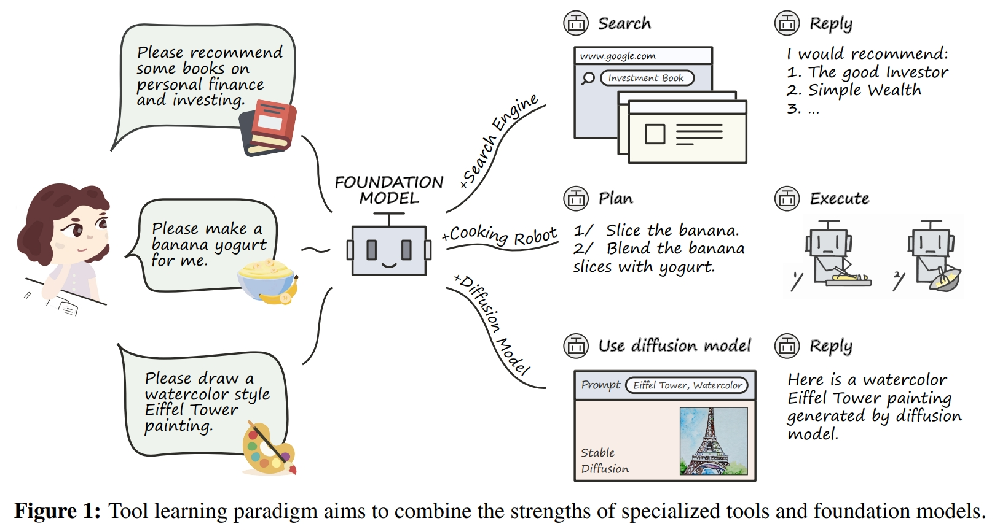

Explore the inner comminication features.
This work addresses the development of large language models (LLMs) with a focus on tool learning, which enhances LLM capabilities by enabling dynamic interactions with external systems rather than relying solely on internal parameters. We pose two key questions:
- Q₁: Are large-scale parameters necessary when developing tool agents?
- Q₂: Is there an optimal model scale that maintains robust tool learning capabilities while significantly reducing computational resource consumption?
Our initial empirical observations indicate that smaller LLM variants (e.g., Llama-2-7b) demonstrate tool learning performance comparable to their larger counterparts (e.g., Llama-2-70b), while significantly smaller models (e.g., GPT-neo 125m) exhibit markedly reduced capabilities. This suggests a trade-off between the scale of an LLM and its tool learning capacity.
To explore this trade-off, we developed SLM, an openly accessible framework designed to "slim" LLMs while preserving their tool learning capabilities. SLM integrates various LLM compression methods into three principal categories: pruning, quantization, and distillation. For each method, SLM conducts a series of model compressions and provides visual feedback on tool learning performance and computational resource utilization.
SLM focuses on evaluating tool learning metrics across four distinct scenarios: general-purpose tool selection, domain-specific tool selection, multi-tool selection, and interactive task planning with environmental feedback. We demonstrate the application of SLM with leading LLMs, such as Llama-3.1, showcasing how it effectively maintains tool learning performance while slimming LLMs.
Structure of the Paper
In summary, this paper is structured into three phases:
- Experimental Findings: We explore the potential for LLMs to perform tool learning at reduced scales, revealing a specific trade-off between tool learning capabilities and the scale of LLMs.
- Methodology: We design, develop, and deploy SLM, an innovative framework for slimming LLMs to preserve their tool learning capabilities.
- Comprehensive Studies: We apply SLM to slim leading open-source LLMs, evaluating tool understanding and interactive execution capabilities.
Disclaimer: This work does not diminish the importance of developing larger-scale foundation models. Instead, it focuses on the niche of "LLM-as-tool-learning-agent" and explores how to efficiently create tool agents with reduced parameter counts, termed "slimming LLMs" in our study. This approach could be particularly beneficial for industries that integrate LLMs with real-world tools in specific scenarios.